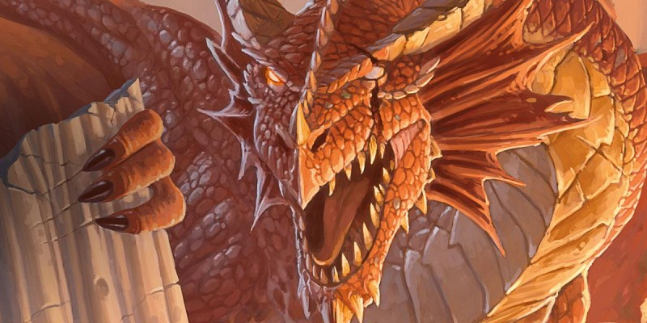

D&D Beyond
Le site « D&D Beyond » propose de nombreux articles sur D&D 5. En voici une sélection.
- Les races pour les nuls. Un aperçu rapide de chacune des races disponibles.
- Les classes pour les nuls. Un aperçu rapide de chacune des classes disponibles.
- Le barbare D&D 5 pour les nuls. Conseils pour créer un barbare.
- Le barde D&D 5 pour les nuls. Conseils pour créer un barde.
- Le clerc D&D 5 pour les nuls. Conseils pour créer un clerc.
- Le druide D&D 5 pour les nuls. Conseils pour créer un druide.
- L'ensorceleur D&D 5 pour les nuls. Conseils pour créer un ensorceleur.
- Le guerrier D&D 5 pour les nuls. Conseils pour créer un guerrier.
- Le magicien D&D 5 pour les nuls. Conseils pour créer un magicien.
- Le moine D&D 5 pour les nuls. Conseils pour créer un moine.
- L'occultiste D&D 5 pour les nuls. Conseils pour créer un occultiste.
- Le paladin D&D 5 pour les nuls. Conseils pour créer un paladin.
- Le rôdeur D&D 5 pour les nuls. Conseils pour créer un rôdeur.
- Le roublard D&D 5 pour les nuls. Conseils pour créer un roublard.
- Welcome to Menzoberranzan. Présentation de la cité drow de l'intrigue de Out of the Abyss.
- Welcome to Candlekeep. Présentation de la grande bibliothèque de Candlekeep Mysteries.
- Welcome to Theros. Présentation de Theros (ambiance Grèce antique) de Mythic Odysseys of Theros.
- Welcome to Skullport. Présentation de Skullport/Undermountain de Waterdeep: Dungeon of the Mad Mage.
- Welcome to Eberron. Présentation de l'univers d'Eberron de Wayfinder’s Guide to Eberron.
- Welcome to Ravnica. Présentation de l'univers de Ravnica de Guildmaster’s Guide to Ravnica.
- Spell Spotlight: Legend Lore. Le sort mythes et légendes passé à la loupe.
- Spell Spotlight: Polymorph. Le sort métamorphose passé à la loupe.
- Spell Spotlight: Healing Word and Spiritual Weapon. Les sorts mot de guérison et arme spirituelle passés à la loupe.
- Spell Spotlight: Dunamancy. La magie du monde d'Exandria passée à la loupe.
- Spell Spotlight: Chromatic Orb. Le sort orbe chromatique passé à la loupe.
- Spell Spotlight: Grease. Le sort graisse passé à la loupe.
- Spell Spotlight: Wish. Le sort souhait passé à la loupe.
- Spell Spotlight: Phantasmal Force and Phantasmal Killer. Les sorts force fantasmagorique et assassin imaginaire passés à la loupe.
- Spell Spotlight: Contagion. Le sort contagion passé à la loupe.
- Spell Spotlight: Cloudkill. Le sort brume mortelle passé à la loupe.
- Spell Spotlight: Conjure Animals. Le sort invocation d'animaux passé à la loupe.
- Spell Spotlight: Forbiddance. Le sort interdiction passé à la loupe.
- Spell Spotlight: Healing Spirit. Le sort esprit guérisseur (XGtE) passé à la loupe.
- Spell Spotlight: Prismatic Wall. Le sort mur prismatique passé à la loupe.
- Spell Spotlight: Fireball. Le sort boule de feu passé à la loupe.
- Spell Spotlight: Conjure Minor Elementals. Le sort invocation d'élémentaires mineurs passé à la loupe.
- Is the Beast Master Broken ? Où l'on parle de l'équilibre de l'archétype de rôdeur du maître des bêtes.
Behind the Screens
Par ailleurs, Wizards of the Coast a également publié un temps sur son site une rubrique nommée « Behind the screens », faîtes par des MD, pour les MD, et qui présentait des conseils utiles. Certains de ces articles, originalement publiés en anglais, ont été traduits en français pour Tapouweb.
- Antisèches. Pour aider à maintenir le rythme d'une aventure.
- Bâtir une campagne. Plusieurs conseils.
- Expériences de MD et joueur. Mode cinématique ou réaliste ?
- Tables aléatoires. Ou comment utiliser le hasard pour créer de nouvelles situations à la volée.
